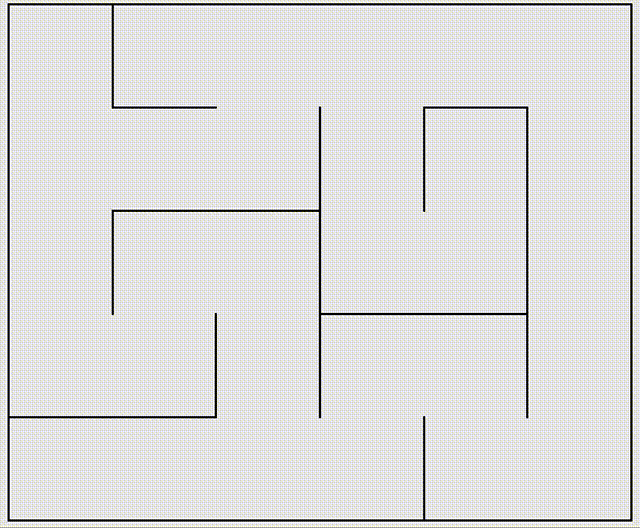
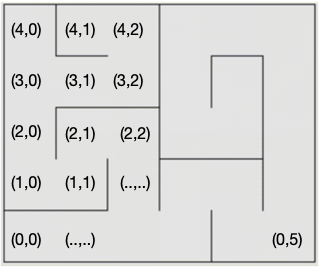
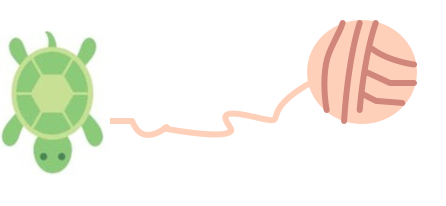
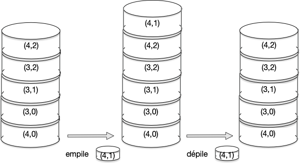
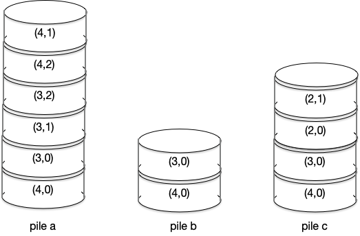
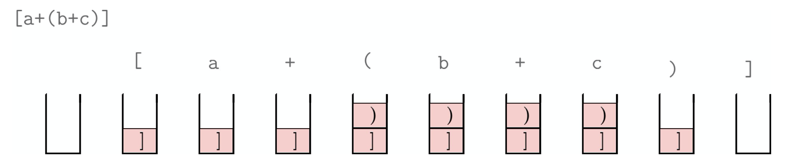

Pile
Ce cours comporte:
- les types abstraits: Lien
- Cours sur les Piles: Lien
- Cours sur les Files et listes: Lien
- exercices en ligne (TP) sur les Piles: Lien
Structure linéaire : La Pile
Les structures de données
Definition: Une structure de données est une manière de stocker, d’accéder à, et de manipuler des données (comme les types list ou dict de Python).
Definition: Un type abstrait décrit essentiellement une interface, indépendamment du langage de programmation.
Un premier exemple
La pile est une manière de ranger les données.
Elle correspond exactement à l’image traditionnelle d’une pile de cartes ou d’assiettes posée sur une table. En particulier, on ne peut accéder qu’au dernier élément ajouté, qu’on appelle le sommet de la pile.
L’illustration suivante montre que c’est la structure de données à adopter si l’on veut sortir d’un labyrinthe…

parcours pour sortir d'un labyrinthe

modelisation d'un labyrinthe
(4,0), (3,0), (3,1), (3,2), (4,2), (4,1) …
puis le chemin inverse jusqu’au sommet (3,0) :
(4,2), (3,2), (3,1), (3,0), …
Une fois revenu au sommet (3,0), on reprend l’exploration vers (2,0), (2,1),…
Il s’agit d’une méthode d’exploration du labyrinthe de type parcours en profondeur. L’algorithme est expliqué en détail à la page : SNT algorithmes graphe : parcours en profondeur

fil d'ariane
Lorsqu’elle s’avance plus en profondeur dans le labyrinthe, vers des sommets encore non explorés, elle empile.
Lorsqu’elle revient sur ses traces, elle dépile (elle retire des sommets de la pile).

pile de sommets du labyrinthe
Elle revient jusqu’à (3,0).
Après avoir dépilé (4,1),(4,2),(3,2),(3,1), la pile est alors la pile b.
Puis, lorsqu’elle est parvenu à une bifurcation vers une nouvelle direction, elle poursuit son exploration (et empile à nouveau) : pile c. Qu’il faudra encore prolonger pour atteindre la sortie (en bas à droite).

pile du parcours en profondeur
Deuxieme exemple : une expression correctement parenthésée
Principe : On lit l’expression de gauche à droite et on empile au fur et à mesure les caractères ouvrants : [, {, (. On dépile lorsqu’on lit le caractère fermant correspondant. A la fin, la pile doit être vide.
Dans l’exemple suivant, on voit que l’expression [a+(b+c)] est correctement parenthesée. Ce qui ne serait pas le cas pour [a+(b+c]).

Définitions
La pile: interface
La pile est une structure de données appropriée quand :
- On veut stocker des éléments dont le nombre est variable, et inconnu à l’avance.
- On peut ou on doit se contenter d’accéder au dernier élément stocké.
Dans d’autres cas, il faudra utiliser une autre structure de données, comme par exemple un tableau.
Une Pile est une structure de données linéaire (les données sont rangées sur un ligne ou une colonne). Le dernier élément entré sera aussi le premier à sortir (Last In First Out : LIFO).
Les méthodes (= fonctions) disponibles pour cette structure sont :
- construction (d’une pile vide)
- test d’une pile vide (renvoie
Truesi la pile est vide) - ajout d’un élément (empiler =
push), mis au sommet de la pile - retire le premier élément de la pile, celui au sommet (dépiler = pop) si la pile est non vide et renvoie cet élément.
- lire le sommet de la pile
Implémenter un pile en Python en langage natif
Le type List en Python possède déjà toutes les méthodes d’une pile :
Lorsque l’on fait référence à une structure de données de type pile en traduisant un algorithme en Python, il faudra se contenter de ces 5 instructions.
Créer une nouvelle Interface
Les types abstraits, comme les piles, sont définis par leur interface (comment on s’en sert) plutôt que par leur implémentation (comment ils fonctionnent). Ils permettent d’étudier des algorithmes indépendamment du langage utilisé.
Rappels:
-
L’interface de la structure de données décrit de quelle manière on peut la manipuler, par exemple en utilisant
appendpour le type list ougetpour le type dict. -
L’implémentation de la structure de données, contient le code de ces méthodes (comment fait Python). Il n’est pas nécessaire de connaître l’implémentation pour manipuler la structure de données.
On verra ici deux manières d’implémenter la pile.
Implémentation fonctionnelle
Pour traduire un algorithme utilisant cette structure pile, il peut être préférable de définir des instructions portant les noms de ces 5 instructions:
Implémentation en Programmation Objet
On peut créer un type (= une classe) Pile personnelle en Python.
Les méthodes (fonctions) déclarées précédemment sont alors associées à l’objet Pile. L’appel d’une méthode se fait à l’aide de l’instruction :
Voir le cours sur la programmation orientée objet.
Rappel : Objet = type mutable. Quelle que soit la façon avec laquelle la pile est implémentée, il faudra se souvenir que celle-ci est un objet mutable. Cela a des conséquences sur la manière avec laquelle la pile est passée en argument d’une fonction, et comment cette fonction modifie la pile.
Pile et recursivité
Tout algorithme récursif peut être mis sous forme d’algorithme itératif avec une structure de données en pile.
Voir le cours sur la recursivité
Exercices sur les piles
voir la page exercices
Autres structures linéaires
Lien vers la page Listes et Files
Liens
- cours sur info.blaisepascal.fr